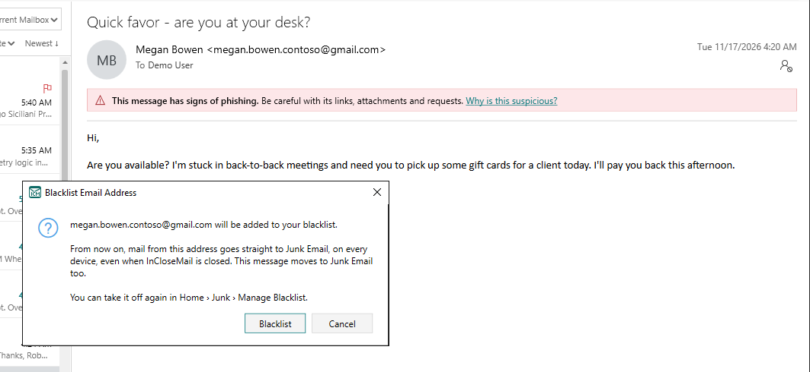
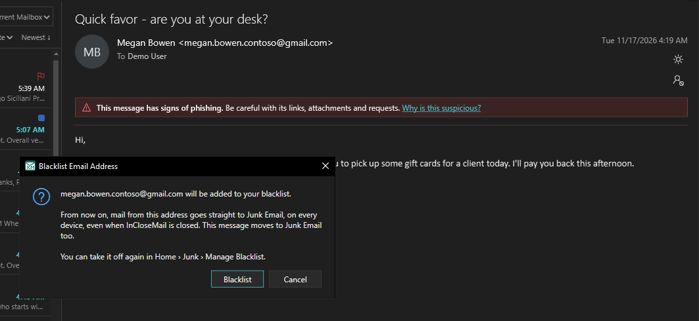
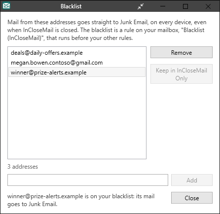
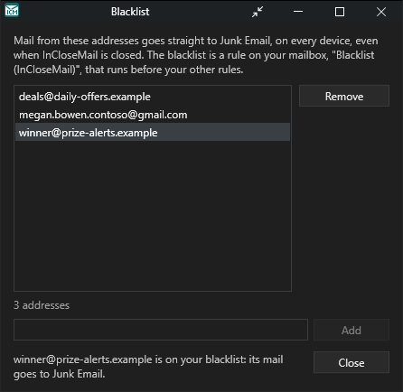

Some senders you never want to hear from again. Outlook’s Block Sender only works where its Junk filter runs, and a rule per sender soon becomes a list nobody can keep track of. InCloseMail keeps them in one list that works everywhere.
- One click: Blacklist Email Address, the button at the right of a message’s header (under the sun in Dark Mode; also in Home → Junk and the message’s right-click Junk menu), asks once, then sends that message and everything the sender sends from now on to Junk Email.




- Works everywhere: the blacklist is one rule on your mailbox, “Blacklist (InCloseMail)”, that Exchange runs before your other rules, so it works on your phone, in Outlook on the web and with InCloseMail closed.
- One list to manage: Home → Junk → Manage Blacklist shows every address, with Add and Remove.




- No surprises with your rules: if a rule you already have also handles that sender (for example, an Always Move Messages From rule), InCloseMail tells you and asks whether to leave that rule alone or delete it.
- On every PC: since the list lives in your mailbox, every PC you use sees the same one.
Missing something you used in Outlook? Choose Help → Suggest a Feature in the app. Found a bug? Choose Help → Report a Bug.